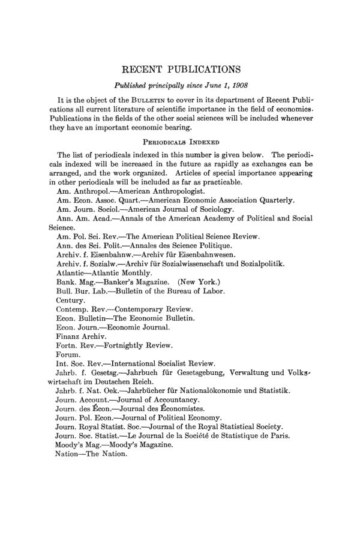

O terceiro Bulletin: petróleo, população e a bibliografia herdada
Leitura: 5 min
O número de setembro de 1908 traz notas sobre nomeações e congressos, 23 resenhas com peso para população, petróleo e cidades, e a bibliografia corrente que o Quarterly Journal of Economics deixa de publicar.


A nota mais consequente do número de setembro de 1908 vem de outro periódico. O Quarterly Journal of Economics anuncia, em seu número de agosto, que deixará de publicar listas de publicações correntes de economia ao fim do volume 1907–08. A tarefa, diz a nota reproduzida no Bulletin, passou a outras mãos.
A bibliografia “tornou-se, mais particularmente, um dos principais objetivos do Economic Bulletin”. (has more particularly become a chief object of the Economic Bulletin)
O que contavam as notas?
Nomeações e congressos dominam. Henry C. Adams retoma as aulas na Universidade de Michigan sem deixar a Interstate Commerce Commission. W. C. Mitchell, da Universidade da Califórnia, vai lecionar em Harvard no lugar de A. P. Andrew, que viaja a serviço da comissão monetária do Congresso. Alexander E. Cance abre cursos de economia agrícola no Massachusetts Agricultural College. Antigos alunos americanos de Johannes Conrad, da Universidade de Halle, organizam uma homenagem pelos seus 70 anos, em fevereiro de 1909.
A saúde pública aparece como assunto de economistas. O Committee of One Hundred sobre regulação federal da saúde pública, da American Association for the Advancement of Science, é presidido por Irving Fisher, de Yale. O congresso internacional sobre tuberculose, em Washington, tem membros da associação na comissão organizadora. A National Tax Association prepara em Toronto sua segunda conferência sobre tributação estadual e local. Em Paris, a Société d'Économie Politique recebe o Political and Economic Circle de Londres e visita a terra natal de Quesnay e o túmulo de Turgot. O número fecha com o obituário de John J. McNulty, professor de filosofia do College of the City of New York, morto em 8 de maio.
Que livros foram resenhados?
São 23 resenhas. A história econômica abre o bloco: Ohio antes de 1850, de Robert E. Chaddock; os cercamentos ingleses, de Gilbert Slater; a refinação de açúcar americana, de Paul L. Vogt. Transporte e grandes empresas vêm em seguida, com os vagões privados de L. H. D. Weld e os relatórios do Commissioner of Corporations sobre o petróleo, resumidos por Lewis H. Haney. Benjamin M. Rastall narra as greves de Cripple Creek, e uma coletânea de conferências em Columbia trata da crise de 1907.
A população tem duas resenhas de peso. Walter F. Willcox examina o compêndio francês de estatística internacional do movimento da população, que faz para as estatísticas vitais o que J. Bertillon fizera para os censos. William B. Bailey resume o estudo de Paul Mombert sobre a Alemanha, apoiado em 118 tabelas estatísticas, que termina com uma revisão das leis de população de Malthus.
Não é frequente encontrar melhor aplicação do método estatístico a um problema social importante. (it is not often that one meets a better application of the statistical method to an important social problem)
As finanças públicas entram com o estudo de Harry G. Friedman sobre a tributação das empresas em Massachusetts. As cidades ocupam um bloco próprio: a conferência de Providence da National Municipal League, o inquérito sobre West Ham, os ensaios de John A. Fairlie e a constituição de Michigan anotada para a convenção constituinte. Fecham o número a biografia de Herbert Spencer por David Duncan, a sociologia de Jordan, Dowd, Ross e Northcote W. Thomas, o governo da Inglaterra de A. Lawrence Lowell e a China de W. A. P. Martin.
Como se organizava a bibliografia?
A seção Recent Publications cobre obras publicadas sobretudo desde 1º de junho de 1908. Mantém a lista de periódicos indexados, com a promessa de ampliá-la à medida que se acertarem as permutas, e a divisão em seções numeradas, das obras gerais à miscelânea. Com a decisão do Quarterly Journal of Economics, que passa a manter uma seção de resenhas e balanços da literatura recente, o inventário corrente fica com o Bulletin.
Na minha leitura
Na minha leitura, o número de setembro mostra a estatística demográfica ganhando o centro da cena. O compêndio francês e o livro de Mombert não partem de dedução: acumulam séries de mortalidade, casamentos e nascimentos e só então discutem Malthus. O mesmo método aparece nos relatórios do petróleo, em que a discriminação ferroviária é demonstrada caso a caso, região por região. A divisão de trabalho entre os periódicos completa o quadro: ao Quarterly Journal of Economics, as discussões extensas; ao Bulletin, o inventário do que se publica.
Glossário
- Cercamento
- conversão de campos abertos e terras comunais inglesas em propriedades fechadas e individuais.
- Discriminação ferroviária
- cobrança de tarifas ou condições diferentes a embarcadores distintos pelo mesmo serviço.
- Estatísticas vitais
- registros de nascimentos, casamentos e óbitos de uma população.
Artigos desta edição
- Personal and Miscellaneous Notes — editores (pp. 189–196). Notas sobre nomeações, congressos e publicações, a decisão do Quarterly Journal of Economics de deixar a bibliografia corrente ao Bulletin e o obituário de John J. McNulty. JSTOR
- Robert E. Chaddock, Ohio Before 1850 — Ernest L. Bogart (pp. 197–198). Monografia de Columbia sobre as origens da população de Ohio e o desenvolvimento da democracia na fronteira, com capítulos sobre a escravidão, as denominações religiosas e a educação. JSTOR
- Frederic Harrison, National and Social Problems — J. R. Commons (pp. 198–199). Reedição de ensaios do líder dos positivistas ingleses, divididos entre problemas nacionais e questões sociais, de The Limits of Political Economy, de 1865, ao sindicalismo e à cooperação. JSTOR
- Gilbert Slater, The English Peasantry and the Enclosure of Common Fields — James B. Morman (pp. 199–201). Volume da série de estudos da London School of Economics, derivado de tese aprovada em 1904, sobre a política dos cercamentos e seus efeitos na produção agrícola, nas rendas e no despovoamento rural. JSTOR
- Paul L. Vogt, The Sugar Refining Industry in the United States — Frank L. McVey (pp. 201–202). Monografia sobre a refinação de açúcar americana, que acompanha a concorrência, a influência da tarifa e a manipulação de preços até a combinação numa única corporação. JSTOR
- Montgomery Rollins, Money and Investments — F. A. Cleveland (pp. 203). Dicionário de termos financeiros em ordem alfabética, com informação descritiva e conselhos ao leitor e um prefácio sobre investimento e especulação. JSTOR
- L. H. D. Weld, Private Freight Cars and American Railways — Frank Haigh Dixon (pp. 203–205). Monografia de Columbia sobre os vagões especiais de propriedade privada, como os refrigerados, os de gado e os tanques, e sobre sua regulação. JSTOR
- Commissioner of Corporations, Report on the Transportation of Petroleum and Report on the Petroleum Industry — Lewis H. Haney (pp. 205–212). Três volumes do Bureau of Corporations sobre a discriminação ferroviária a favor da Standard Oil Company, os oleodutos, a posição da empresa na indústria e seus preços e lucros. JSTOR
- Benjamin McKie Rastall, The Labor History of the Cripple Creek District — William Kirk (pp. 212–214). Relato dos dois grandes conflitos entre capital e trabalho no distrito mineiro de Cripple Creek, a greve de 1893 e a luta de 1903–1904. JSTOR
- Seligman e outros, The Currency Problem and the Present Financial Situation — H. Parker Willis (pp. 214–215). Conferências de banqueiros e outros em Columbia sobre a crise de 1907 e a reforma monetária, com introdução de Edwin R. A. Seligman sobre a crise à luz da história. JSTOR
- Harry G. Friedman, The Taxation of Corporations in Massachusetts — Carl C. Plehn (pp. 215–218). Estudo de Columbia sobre a tributação das empresas em Massachusetts, com dois capítulos históricos e capítulos sobre o imposto geral e as empresas comerciais, de serviço público e financeiras. JSTOR
- Statistique internationale du mouvement de la population — Walter F. Willcox (pp. 218–220). Compêndio francês de estatísticas vitais de vários países, das origens do registro civil até 1905, formado pela consolidação de apêndices da estatística anual francesa da população. JSTOR
- Paul Mombert, Studien zur Bevölkerungsbewegung in Deutschland — William B. Bailey (pp. 221–223). Estudo do movimento da população alemã em cinco capítulos, sobre mortalidade, casamentos, nascimentos, excedente de nascimentos e as leis de população de Malthus. JSTOR
- Clinton Rogers Woodruff (ed.), Report of the Providence Conference of the National Municipal League — Thomas Raeburn White (pp. 223–225). Registro do trabalho da liga em 1907 e de sua conferência anual em Providence, com relatórios de comissões, discussões informais e trabalhos formais. JSTOR
- Edward G. Howarth e Mona Wilson, West Ham: A Study in Social and Industrial Problems — J. Edward Newton (pp. 226–227). Inquérito do Outer London Inquiry Committee sobre moradia, indústrias, governo local e instituições de West Ham, subúrbio no extremo leste de Londres. JSTOR
- David Duncan, Life and Letters of Herbert Spencer — Isaac A. Loos (pp. 227–232). Biografia em dois volumes escrita pelo primeiro secretário de Spencer, escolhido por ele próprio, para completar a autobiografia. JSTOR
- David Starr Jordan, The Human Harvest — Charles A. Ellwood (pp. 232–233). Ensaio do presidente de Stanford sobre as causas do declínio das nações, que o resenhista discute do ponto de vista dos limites entre biologia e sociologia. JSTOR
- Jerome Dowd, The Negro Races, vol. 1 — Ulysses G. Weatherly (pp. 234–235). Primeiro volume de uma série de estudos sociológicos do autor, que descreve povos africanos organizados por zonas econômicas, da banana, do milhete, do gado e do camelo. JSTOR
- Edward Alsworth Ross, Social Psychology — Charles A. Ellwood (pp. 235–238). Esboço e livro de fontes de psicologia social, que o resenhista discute quanto à delimitação do campo e ao uso como curso introdutório. JSTOR
- Northcote W. Thomas, Natives of Australia; Kinship Organizations and Group Marriage in Australia — Ulysses G. Weatherly (pp. 238). Dois livros sobre os aborígines australianos: um relato geral que abre a série The Native Races of the British Empire e uma discussão crítica da organização de parentesco. JSTOR
- John A. Fairlie, Essays in Municipal Administration — Clinton Rogers Woodruff (pp. 238–240). Coletânea de ensaios sobre a organização das cidades, as funções municipais e o governo municipal no exterior, o mais longo sobre as corporações municipais nas colônias. JSTOR
- A. Lawrence Lowell, The Government of England — T. F. Moran (pp. 240–242). Tratado em dois volumes sobre o governo inglês, nacional e local, da Coroa, do gabinete e do Parlamento aos partidos, à igreja, ao império e aos tribunais. JSTOR
- Legislative Reference Department of Michigan, Constitution of Michigan Annotated for the Use of the Constitutional Convention — Clinton Rogers Woodruff (pp. 242–243). Edição anotada da constituição de Michigan, em 25 partes, que reproduz para cada artigo os dispositivos equivalentes de outras constituições e leis estaduais. JSTOR
- W. A. P. Martin, The Awakening of China — Edw. D. Jones (pp. 243–245). Relato popular da história e da situação presente da China por um veterano da educação ocidental no país, em três partes e três apêndices. JSTOR
- Recent Publications (pp. 246–277). Bibliografia corrente, sobretudo de obras publicadas desde 1º de junho de 1908, com lista de periódicos indexados e seções temáticas numeradas de livros e artigos. JSTOR
Fontes
- Personal and Miscellaneous Notes (pp. 189–196). JSTOR · Internet Archive (PDF)
- [untitled] The Economic Bulletin, (1908-09-01), pages 197-198 (pp. 197–198). JSTOR · Internet Archive (PDF)
- [untitled] The Economic Bulletin, (1908-09-01), pages 198-199 (pp. 198–199). JSTOR · Internet Archive (PDF)
- [untitled] The Economic Bulletin, (1908-09-01), pages 199-201 (pp. 199–201). JSTOR · Internet Archive (PDF)
- [untitled] The Economic Bulletin, (1908-09-01), pages 201-202 (pp. 201–202). JSTOR · Internet Archive (PDF)
- [untitled] The Economic Bulletin (1908-09-01), page 203 (pp. 203). JSTOR · Internet Archive (PDF)
- [untitled] The Economic Bulletin, (1908-09-01), pages 203-205 (pp. 203–205). JSTOR · Internet Archive (PDF)
- [untitled] The Economic Bulletin, (1908-09-01), pages 205-212 (pp. 205–212). JSTOR · Internet Archive (PDF)
- [untitled] The Economic Bulletin, (1908-09-01), pages 212-214 (pp. 212–214). JSTOR · Internet Archive (PDF)
- [untitled] The Economic Bulletin, (1908-09-01), pages 214-215 (pp. 214–215). JSTOR · Internet Archive (PDF)
- [untitled] The Economic Bulletin, (1908-09-01), pages 215-218 (pp. 215–218). JSTOR · Internet Archive (PDF)
- [untitled] The Economic Bulletin, (1908-09-01), pages 218-220 (pp. 218–220). JSTOR · Internet Archive (PDF)
- [untitled] The Economic Bulletin, (1908-09-01), pages 221-223 (pp. 221–223). JSTOR · Internet Archive (PDF)
- [untitled] The Economic Bulletin, (1908-09-01), pages 223-225 (pp. 223–225). JSTOR · Internet Archive (PDF)
- [untitled] The Economic Bulletin, (1908-09-01), pages 226-227 (pp. 226–227). JSTOR · Internet Archive (PDF)
- [untitled] The Economic Bulletin, (1908-09-01), pages 227-232 (pp. 227–232). JSTOR · Internet Archive (PDF)
- [untitled] The Economic Bulletin, (1908-09-01), pages 232-233 (pp. 232–233). JSTOR · Internet Archive (PDF)
- [untitled] The Economic Bulletin, (1908-09-01), pages 234-235 (pp. 234–235). JSTOR · Internet Archive (PDF)
- [untitled] The Economic Bulletin, (1908-09-01), pages 235-238 (pp. 235–238). JSTOR · Internet Archive (PDF)
- [untitled] The Economic Bulletin (1908-09-01), page 238 (pp. 238). JSTOR · Internet Archive (PDF)
- [untitled] The Economic Bulletin, (1908-09-01), pages 238-240 (pp. 238–240). JSTOR · Internet Archive (PDF)
- [untitled] The Economic Bulletin, (1908-09-01), pages 240-242 (pp. 240–242). JSTOR · Internet Archive (PDF)
- [untitled] The Economic Bulletin, (1908-09-01), pages 242-243 (pp. 242–243). JSTOR · Internet Archive (PDF)
- [untitled] The Economic Bulletin, (1908-09-01), pages 243-245 (pp. 243–245). JSTOR · Internet Archive (PDF)
- Recent Publications (pp. 246–277). JSTOR · Internet Archive (PDF)
- Sumário da edição no JSTOR: The Economic Bulletin, vol. 1, nº 3.
Documento em domínio público (EUA, publicado antes de 1931), via JSTOR Early Journal Content e Internet Archive. Resumo e comentário do autor deste site, sem afiliação com a American Economic Association. Encontrou um erro? Escreva: a correção é publicada no próprio texto, com data.
← Nº 92 · Towles, 1908: as leis de fábrica de Rhode Island, de 1840 a 1907 Nº 94 · Seligman, 1908: o imposto progressivo entre a teoria e a prática →